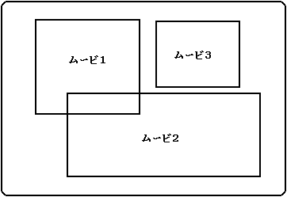
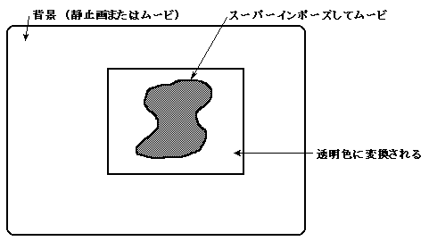
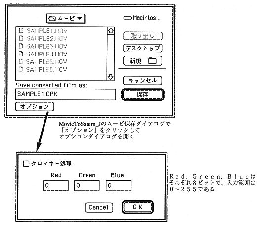
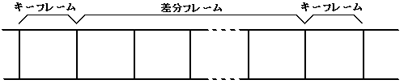
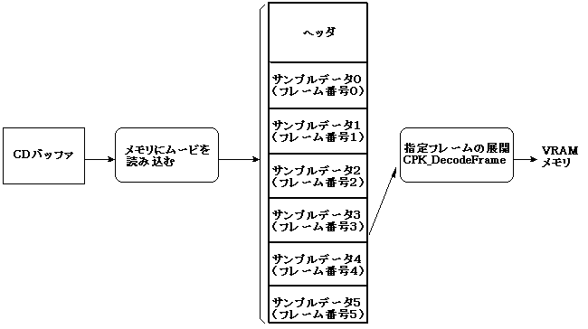

- シームレスブランチを行うムービは、サウンドの内容(サンプリングレート、量子化ビット数、チャネル数)およびフレームレートを同じにしてください。
- シームレスブランチを行うムービは、CD-ROM上にできるだけ近くに配置してください。また、分岐する順にCD-ROMの内側から外側に向かって配置してください。
- シームレスブランチは、マルチムービ再生では使用できません。
3.2 マルチムービ再生
Cinepak for SEGASATURNは、最高4つまでのムービをスクリーン上に同時に再生することができます。図3.4にマルチムービ再生のイメージを示します。マルチムービを行うムービは、通常の1本のムービを作成するときと同じ手順で行います。サウンドは、それぞれのムービに独立して持って同時に鳴らすこともできますし(または、ユーザが選択したムービのサウンドだけを鳴らし、他のサウンドはボリュームを絞ることも可)、1本だけサウンドを持たせ他のムービは画像だけで再生することもできます。
マルチムービには、次の形態があります。
- 複数のムービをCD上にチャネルインターリーブし、CDから同時に再生する
- メモリ上のムービとCD上のムービを同時に再生する
- 複数のムービをメモリ上に読み込み同時に再生する
図3.4 マルチムービの再生

注意
- 複数のムービをCD上にチャネルインタリーブする場合は、それぞれのムービのデータレート(ビットレート)を正確に指定しインタリーブしてください（詳細は、バーチャルCDのマニュアル参照）。
- 複数のムービそれぞれにサウンドを持つ場合は、サンプリングレートを落としてください(11KHz程度)。
- マルチムービ再生からは、シームレスブランチを行うことはできません。
3.3 スーパーインポーズ
クロマキー撮影したムービを使って、被写体を別の静止画やムービの背景上にスーパーインポーズすることができます。スーパーインポーズは、MovieToSaturn_Jで指定した特定の色をSEGASATURN上でデコードするときに透明化することによって実現しています。従って、透明化したい背景は単一色でなければなりません。スーパーインポーズするムービは、サウンド付きでもサウンドなしでも使用することができます。
図3.5 スーパーインポーズ

スーパーインポーズを行うには、Adobe Premiereの「カラー置き換え」フィルタまたは「透明度設定」を使います。(「カラー置き換え」、「透明度設定」の詳細についてはAdobe Premiereのマニュアルを参照してください)
●「カラー置き換え」フィルタの場合
- 例えば、ブルーバック撮影されたムービの場合、背景の青を対象の色として選択します。次に、置き換える色を「赤=0、緑=65536、青=0」に設定し純粋な緑に置き換えます。類似性スライダを使ったり、くり返し置き換えを行ったりして背景を純粋な緑1色にします。この際、置き換え先の色がスーパーインポーズする被写体の中に含まれないように注意してください。もし含まれるようならば、緑でなく純粋な赤や白、黒等でもかまいません。
- カラー置き換えが終了したらそのムービをCinepak圧縮します。
- 次に、MovieToSaturn_Jで変換する際に、「オプション」ボタンをクリックしクロマキー処理を選択後キーアウトするカラー値を入力します(図3.6)。置き換えた色が純粋な緑ならば「Red=0、Green=255、Blue=0」を入力後、SEGASATURNフォーマットに変換します。
●「透明度設定」の場合
コンストラクションウインドウのスーパトラックにはブルーバック撮影されたムービを、Aトラックにはキーアウトするブルー1色の静止画を配置します。スーパトラックのムービを選択後、透明度設定ダイアログを開きキータイプでクロマを選びます。類似性スライダを使用して背景色がきれいに透明になるように調整してください。これで、Aトラックをマットにしたムービを作ることができます。
その後は、「カラー置き換え」同様に2.、3.を実行します。
図3.6 MovieToSaturn_J オプションダイアログ

注 意
 |
スーパーインポーズしたムービは、Cinepak圧縮によってエッジの部分が指定した色と変わってしまいきれいにキーアウトできません。この場合は、CPK_SetKeyOutRange関数を使ってキーアウトする色の範囲を調整します。 |
3.4 キーフレーム ポーズ
●キーフレームについて
ムービの圧縮には、フレーム内でデータを圧縮する空間圧縮と、前のフレームと変化が無い部分はデータを持たないことで圧縮を行う時間圧縮の２種類があります。一般に、時間圧縮したフレームを差分フレームと呼び、これに対して空間圧縮だけのフレームをキーフレームと呼びます。
Cinepakは差分フレームに対応したコンプレッサであり、圧縮時にキーフレームを指定して時間圧縮を行うことができます。例えば、「30フレームごとにキーフレーム」とした場合は、1個のキーフレームと29個の差分フレームで構成されます(Cinepakコンプレッサが自動的にキーフレームを挿入することがあるため、実際には30フレームごとにキーフレームが入るとはかぎりません)。差分フレームは時間圧縮した部分がブロックに見えるという一種のブロック化現象の問題がみられます。キーフレーム指定をしないで圧縮した場合は、各フレーム空間圧縮だけとなり差分フレームはなくなります。
図3.7 キーフレームと差分フレームの関係

●キーフレームポーズ
Cinepakライブラリのポーズ機能(CPK_Pause関数)には、即ポーズとキーフレームポーズを指定するためのパラメータを用意しています。キーフレームポーズを指定した場合は、当然ポーズを起動後キーフレームがあらわれるまではポーズしません。従って、1秒毎にキーフレーム指定をした場合はポーズ起動後最高1秒待たされることになります。これは、ポーズを解除した場合サウンドとの同期を確保するためです。これを避けるには、Cinepak圧縮時にキーフレーム指定をしないか、もしくはキーフレームの間隔を短くしてください。
3.5 静止画再生
ムービデータを予めメモリ上に読み込み、指定フレームを展開(CPK_DecordeFrame関数)することによって、ムービのフレームデータを静止画として使用することができます。
図3.8 静止画再生の流れ

注意
- 止画用ムービは、サウンドを付けないでCinepak圧縮してください。
- Cinepak圧縮時のフレームレートは任意です(意味がありません)。
- Cinepak圧縮時、キーフレーム指定は絶対に行わないでください。
- 静止画用ムービは、全てメモリ上に読み込まれている必要があります。フルスクリーンのフレームサイズの場合は、10〜20フレーム程度のムービファイルにするのが適当でしょう。
▲
戻る｜
進む▼
 ★MOVIE TOOLS GUIDE
★Cinepak for SEGASaturn
★MOVIE TOOLS GUIDE
★Cinepak for SEGASaturn
Copyright SEGA ENTERPRISES, LTD,. 1997
|